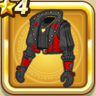

小悪魔スーツ上
攻略班 5.5点 / ドルマ属性耐性+3%幻惑耐性+5%
くわしい特徴
【レベル別習得スキル】 Lv1ドルマ属性耐性+3% Lv6幻惑耐性+5% Lv8守備力+4 Lv10さいだいHP+3 Lv16きようさ+3 Lv20守備力+4 【限界突破スキル】 1凸幻惑耐性+3% 2凸守備力+2 3凸きようさ+3 4凸さいだいHP+5

攻略班 5.5点 / ドルマ属性耐性+3%幻惑耐性+5%
【レベル別習得スキル】 Lv1ドルマ属性耐性+3% Lv6幻惑耐性+5% Lv8守備力+4 Lv10さいだいHP+3 Lv16きようさ+3 Lv20守備力+4 【限界突破スキル】 1凸幻惑耐性+3% 2凸守備力+2 3凸きようさ+3 4凸さいだいHP+5